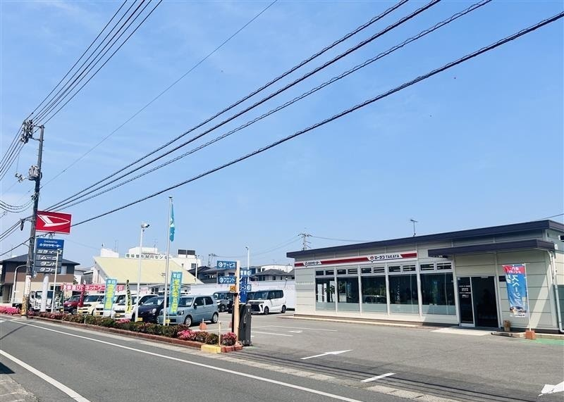
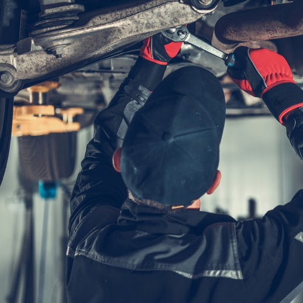
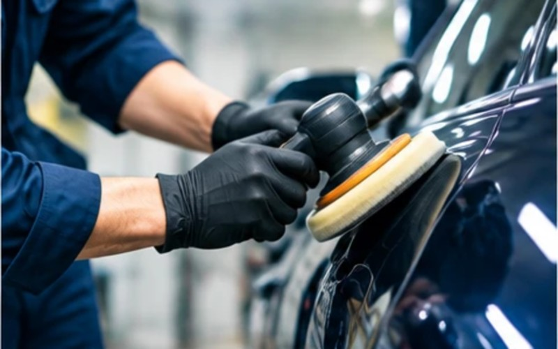

1965年創業（昭和40年5月10日）
60年岡山市中区で、地域とともに
10万台以上これまでに見てきたクルマ（延べ）
3,500台／年年間の取扱台数
ABOUT
岡山市中区で60年。
岡山市中区で60年。
クルマのことを、まとめて相談できる会社です。
タカヤモーター（昭和40年創立）とタカヤリース（昭和59年創立）の2社で、新車・中古車の販売、買取、リース、車検・整備、板金塗装、自動車保険まで、クルマのことをまとめてお受けしています。スズキ・ダイハツの代理店ですが、国産車は全メーカー、輸入車の整備もお受けします。
会社情報を見る →大切にしていること
- お客様にとって、何がベストかを優先して対応します
- おクルマの代替ありきの提案はしません
- 大切なおクルマをながく乗りたい方には、どんな点検や修理が必要かを丁寧に説明します
SERVICE
 イメージ図／写真差し替え予定：リース車両
イメージ図／写真差し替え予定：リース車両
おクルマのことはすべてワンストップで対応可能です！
クルマを探す・買い取る、リース、車検・点検・整備、板金・コーティング、自動車保険。クルマに関することは、この5つのサービスでまとめてお受けします。

01
クルマを探す・買い取る
新車は日本車の全メーカー。中古車はご希望条件で業者オークションから探すオーダー形式。
くわしく見る →イメージ図／写真差し替え予定：リース車両
02
法人・個人リース
税金・保険・車検・整備まで月額に含めたメンテナンスリースと、ファイナンスリース。
くわしく見る →
03
車検・点検・整備
国産車は全メーカー対応、輸入車もOK。自社の指定工場で車検から一般整備まで。
くわしく見る →
04
板金・コーティング
傷・へこみの修理から塗装まで。東京海上日動リペアネット取扱。
くわしく見る →
05
自動車保険
東京海上日動・損保ジャパンの代理店。購入から保険まで一つの窓口で。
くわしく見る →
ACCESS
部署別の電話番号・くわしいアクセス →
アクセス
営業時間
8:30–17:30
定休日：毎週火曜日／年末年始・ゴールデンウィーク・お盆
お電話
タカヤモーター 0120-100-152
タカヤリース 0120-556-649